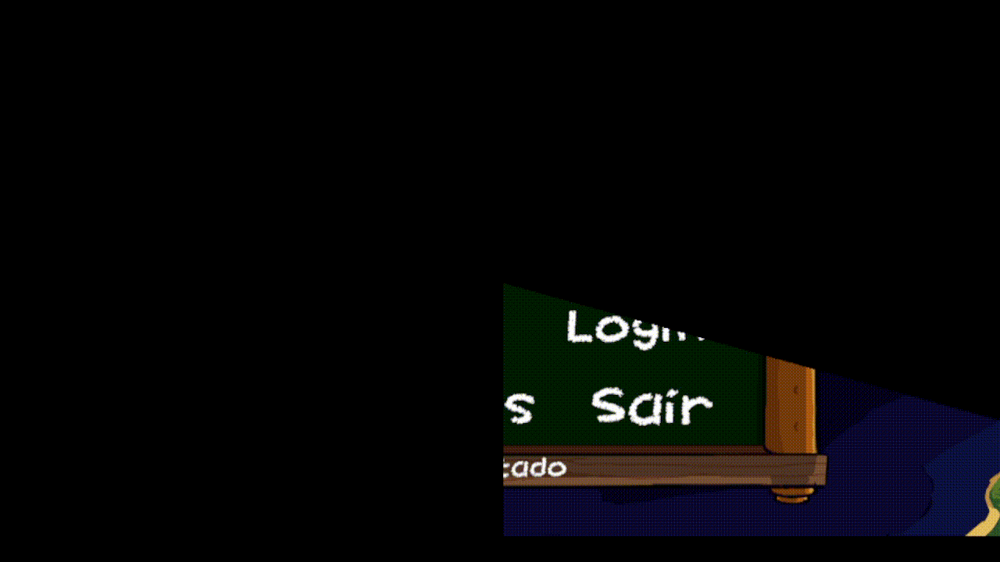

Detalhes do Projeto

Visão Geral do Projeto
Jeitinho Brasileiro é um jogo de minigames rápidos inspirados na cultura brasileira, organizados por região do país e jogados em sequência contra o relógio, com dificuldade crescente a cada fase. Foi desenvolvido em equipe, em Unity, para a Semcomp, e conta com 36 minigames e versões para Web e Android.
Esta página mostra a minha parte do projeto. Fui um dos membros do grupo e contribuí com quatro minigames (Chinelo, Arrumar Arraiá, Surf na Pororoca e Berrante), além de toda a arte do Arrumar Arraiá. A estrutura central do jogo, como o gerenciamento de fases e do timer, o menu e os demais sistemas globais, foi desenvolvida por outros integrantes da equipe.
Minhas Contribuições
Chinelo
Minigame em interface (UI) em que o jogador precisa desvirar todos os chinelos antes do tempo acabar. Eles são sorteados e embaralhados em uma grade 3x3 posicionada por código, com pequenas variações de posição. Clicar em um chinelo que já estava certo faz a tela tremer e atordoa o jogador por 2 segundos, e a vitória pode vir antes do fim do tempo se tudo for corrigido a tempo.
Arrumar Arraiá
Puzzle de grade no estilo Sokoban em que o jogador empurra um balão, por clique ou arrasto, até o seu lugar. As fases são montadas a partir de Tilemaps (chão, obstáculos, alvos e ponto de partida) e sorteadas a cada partida, com ajuste automático de escala e posição para qualquer tela. Bater em um obstáculo ou deixar o tempo acabar estoura o balão. Também fiz toda a arte do minigame.
Surf na Pororoca
Minigame de sobrevivência com controle próprio: o surfista segue o dedo ou o mouse na vertical, e o avanço vem de balançar para cima e para baixo, o que gera impulsos que perdem força com o tempo. A pororoca empurra o jogador para trás e galhos surgem pelo caminho; quem é atingido ou fica para trás cai em câmera lenta. Os galhos aparecem mais rápido a cada fase, e o fundo em parallax se ajusta ao tamanho da tela.
Berrante
O jogador sopra no microfone para encher uma barra antes do tempo acabar, e ela esvazia sempre que ele para. Se não houver microfone ou nenhum sopro for detectado, o minigame percebe isso sozinho e libera a barra de espaço como alternativa, lembrando a escolha nas rodadas seguintes. Usei o detector de áudio do projeto, que também funciona na versão Web, e ajustei a sensibilidade com base em testes.
Os quatro minigames seguem o padrão criado pela equipe: todos herdam de uma classe base (MinigameBase) que padroniza vitória, derrota e fim de tempo, e ajustam tempo e dificuldade pelo gerenciador global do jogo.